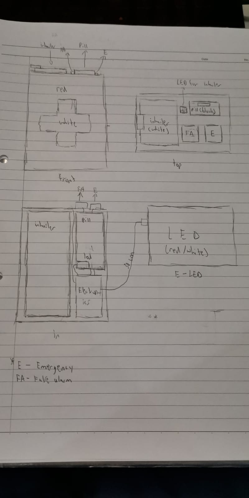

My Initial Ideas
Medical and emergency supply kit.
Discription
The context is that a friend of mine told me of how it was difficult for her to access her medical supplies like her inhailer or her pills if needed when she gets an asthmah attack while in her canoe. It is also hard for her to signal to others around her that she is in need as most of the time her friends wont be close enough to hear or notice her in trouble. This prototype is design to help her to easily be able to access her inhailer when she gets an attack without the need to search through her medical bag like she usually does. It also has a compartment for the pills if the inhailer sizes to work. Besides that, the device also has a led lamp attached to it that will alert people around her that she is in need should the need arise.
Sadly in the end this could not be accomplised as the water proofing would be a great chellange for my first project and my lecturer discoraged me to try water proof projects on my first attempt. The second reason was because the electricals does not require a computer with the simple functions of the prototype